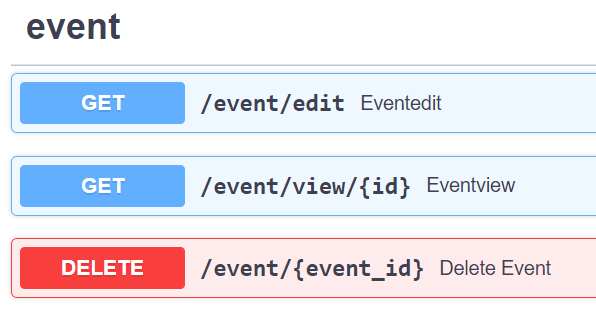

תיאור כללי
ישות (Entity) בלוח השנה יכולה להיות מכמה סוגים:
- Event
- Task
- Reminder
(לדוגמא - התאריך והשעה לכל סוג ישות הוא מאפיין משותף)
כל ישות צריכה פעולות CRUD -
- יצירה (create)
- קריאה (read)
- עדכון (update)
- מחיקה (delete)
מה ההצעה כוללת?
- עדכון DB למבנה נתונים שיכלול ישות אבא(Entity) וילדים (Event, Task, Reminder)
- יצירת API עבור כל פעולה על ישות
כולל שינויים בקוד? אם כן, איפה?
שימוש ב FASTAPI ע"מ ליצור את הפעולות הבסיסיות
האם יהיו שינויים במסד הנתונים? אם כן, איפה?
כן, עדכון DB למבנה נתונים שיכלול ישות אבא(Entity) וילדים (Event, Task, Reminder)
האם יהיה שינוי ב־frontend? אם כן, איפה?
לא בשלב הזה.
אילו טסטים יגרמו לטיקט להיחשב כ"עובד", ויאפשרו לנו לסגור את הטיקט ולהגדיר את המשימה כהושלמה?
- unittest עבור כל פעולה בסיסית
- docs מעודכן
לדוגמא, דרוש תיקון -
